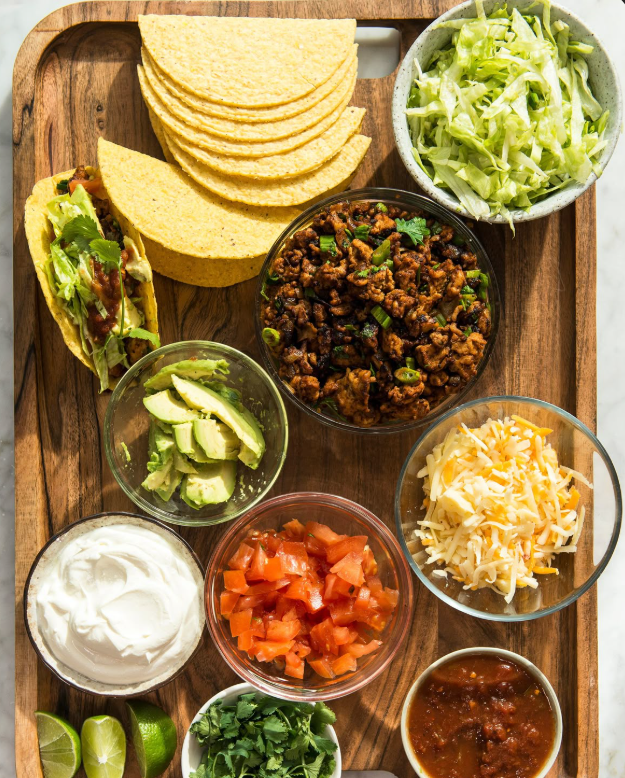
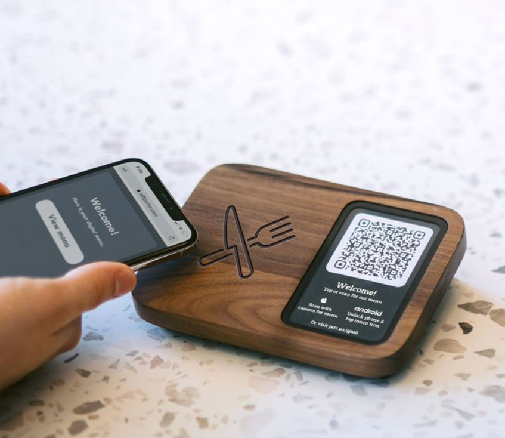
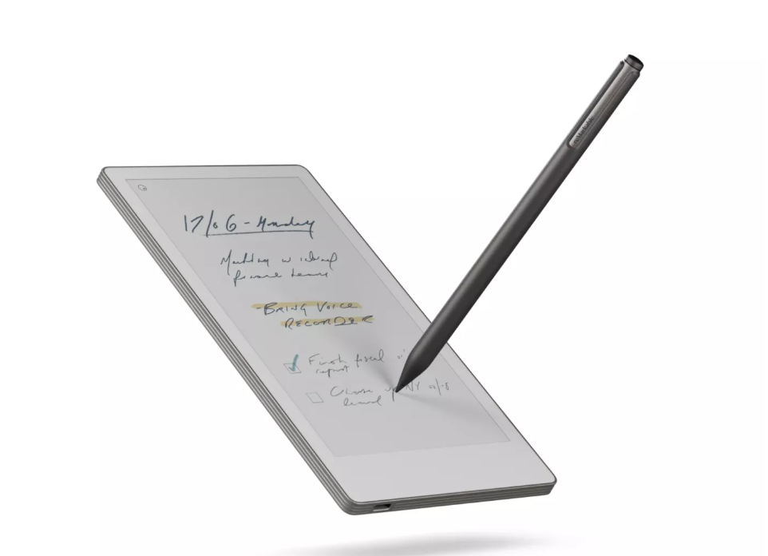

FlyCertify
Application de gestion de carnets de vol numérique. Digitalisation des certifications pour les pilotes avec système de QR Code.
Consulter FlyCertify Dark John
Dark John
Des solutions techniques pour des besoins réels.
Application de gestion de carnets de vol numérique. Digitalisation des certifications pour les pilotes avec système de QR Code.
Consulter FlyCertify
Système de commande interactive pour restaurants. Intégration de paiement Wave et gestion fluide du panier client.
Voir le menu
Outil simple et rapide pour générer des QR Codes personnalisés pour liens web et contacts.
Tester la foncionnalité du QR-Code
Un gestionnaire de tâches intelligent et minimaliste. Il permet d'organiser ses note avec un système de priorité et de sauvegarde automatique.
Conçu pour les utilisateurs qui veulent une solution simple et efficace pour gérer leurs tâches quotidiennes.